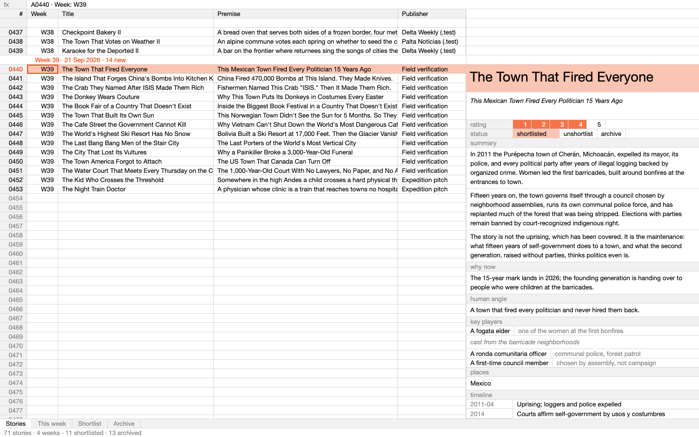
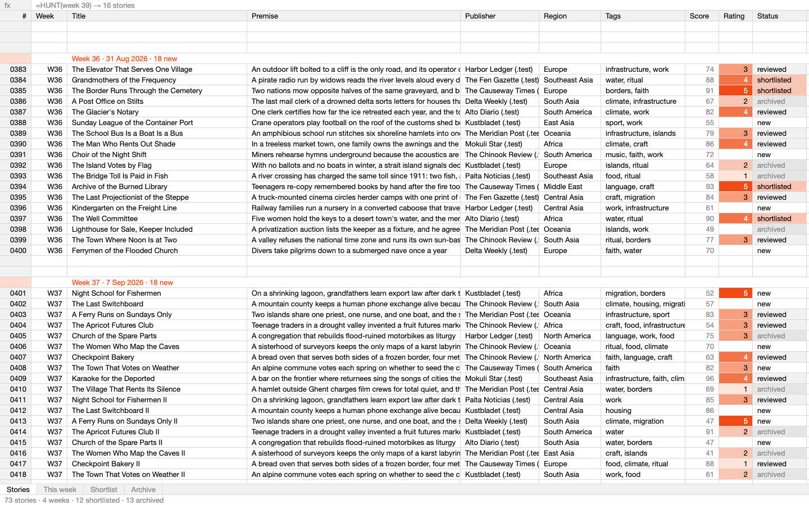
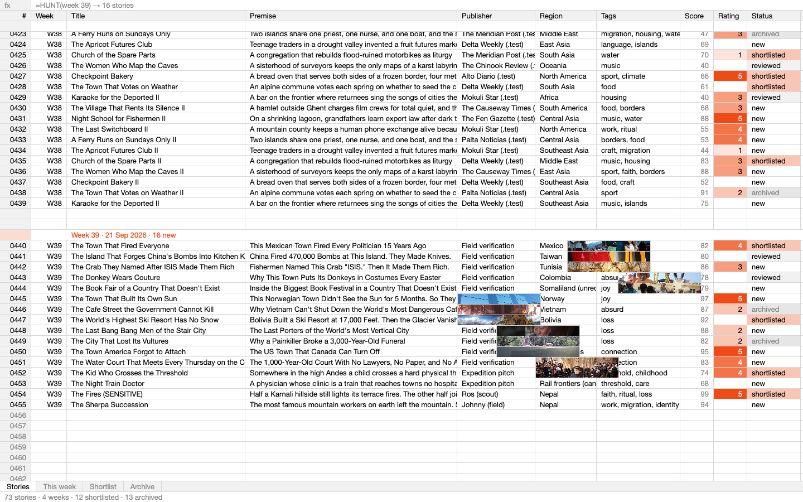
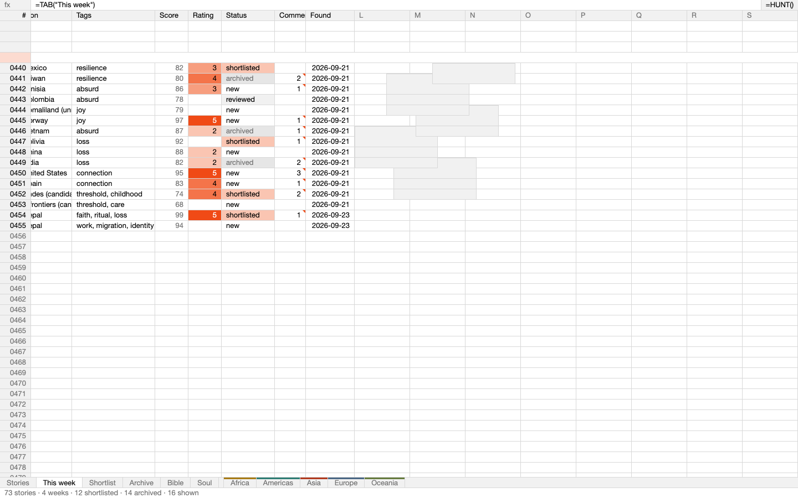
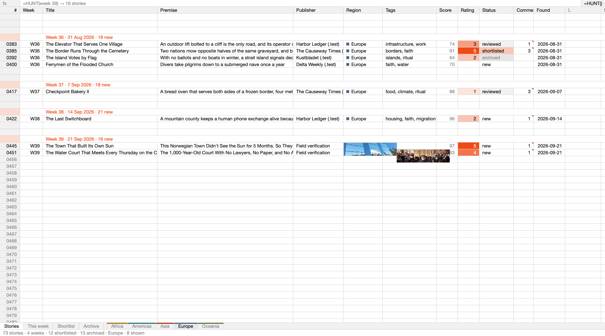
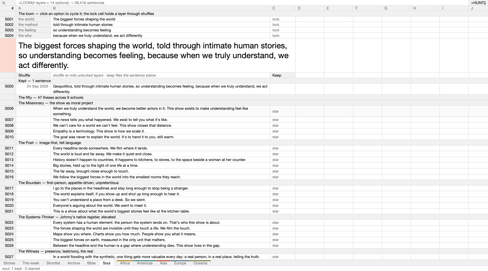
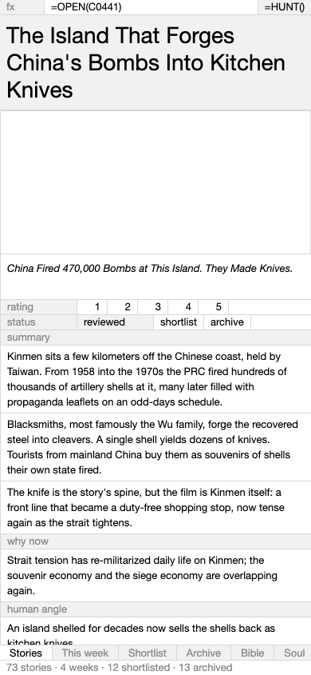

Screenshots from my own verification passes. 28 tests green · Lighthouse 99 at 3,200 rows · deploy in flight. The winning exploration is still drivable.

The first working build: sheet + split-pane dossier (Cherán open)

The life pass: breathing rows, legend swatches, richer seed

Week 39 with the careless-paste scouted photographs

Review fix 1: thumbnails moved to the open country, never over text

Continent tabs live: Europe filtered via the ] key

The Soul sheet: the loom as rows, =LOOM() in the formula bar

Phone ledger at 390px with the dossier full-screen